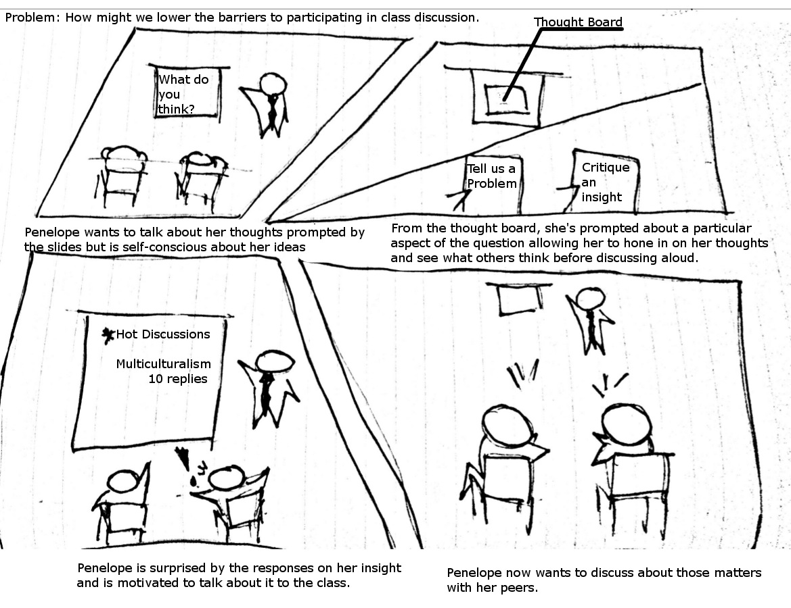
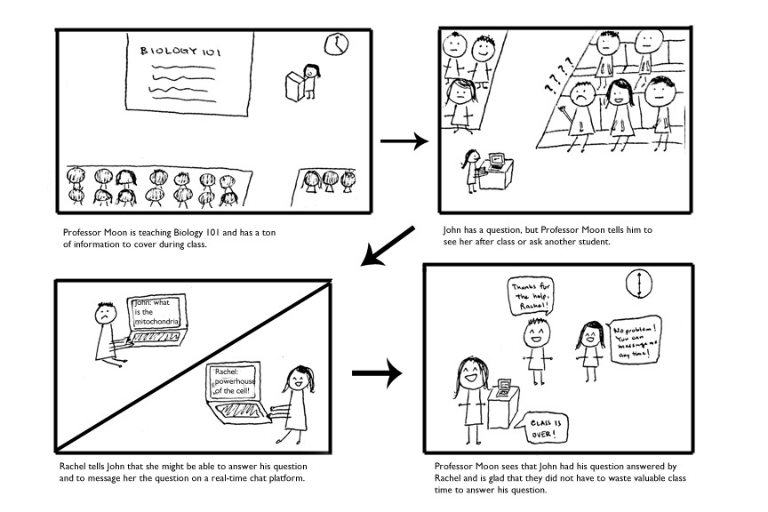
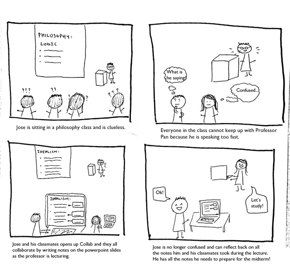

ALLAN ASIS
HOME
PROJECTS
CONTACT
The Problem:
Students are not always paying attention in class because they are too distract by their devices, too busy writing everything down, cannot keep up with the professor's talking, or falling asleep. Professors in large classrooms want their students to be engaging, howveer they do not have data on who is actually paying attention.
The Solution:
Discourse is an interactive lecture technology that lowers the barrier for interactoin between students and professors to create a comprehensive learning experience in the classroom.
My Role:
Visuals, Prototypes, Ideation, Branding
Tools:
Pen and Paper, InVision, GIMP, Photoshop, iMovie, Adobe After Effects
Overview:
Discourse is an interactive lecture service that facilitates collaborative learning and provides analytics for professors. Unlike other platforms, Discourse facilitates collaborative learning and in-class activities that produces comprehensive learning materials.
Discovery
First we conduct a STEP Analysis to find a Product Opportunity Gap. We looked for needs and trends centered around the Education space.
- Social
- Lack of relationship among students and between students and professors
- “Wisdom of the crowds” Increase in students collaboration on projects and answering questions
- Lower the barrier to interaction between professors and students
- Technologoical
- Online collaborations platforms and discussion boards
- Instant Messaging
- Oversaturated discussion
- Students on devices in class
- Economic
- High cost of textbooks
- Decreasing value of higher education
- Ease of creating and sharing of online tools
- Political
- Grade Inflation
We focus on 3 "How Might we" questions to guide our data gathering in interviews and existing competitors
- How might we create easy-to-use and unambiguous channels for communication between students, professors, and TAs?
- How might we foster student etiquette and professionalism to create a reliable platform for prompt and helpful answers?
- How might we enable students to collaboratively interact with, annotate, discuss, and transform the professor’s content?
Wireframe
We storyboard different solutions to address different insights from our data:
  User Testing

We designed a Service Enactment to test the workflow of our product. Simulating a lecture through podcasts allows for:
- the wizard of oz of simulating our service, where the professor would pause the lecture for “discourse” activities.
- our team to test what kind of activities were appropriate for the specific lecture
As a participant is listening to the podcast, we paused periodically for them to answer freeform questions through a google survey form we prepared.
Google Form
Service Enactment Analysis
- Many of the activities that we conducted were not as valuable as we thought
- Participants aren’t interested in other student’s answers unless they know that it is right
- Giving full imagination to the participants helped us visualize more valuable features. These features were pertinent to the specific class and lecture style. The service has to be either/both:
- Really smart enough to ask the right questions in context
- Heavily mediated by the professor to ask the right questions
- Given the above, the service will need to bridge this gap by either spending time in development and more testing in its activity generation for students or for making it easier for professors to generate the activities for students.
Key Learnings:
Value of Correctness, Participation, and Independence
In focusing toward large lecture style learning, we equate learning with getting an answer right rather than the reason of why it is an answer.
How Important are data analytics really
For Professors and TA's, we focused on class metrics. We assume that if they have access to the struggle points after a lecture, they could reorient the next.
Conclusion
Breaking into the education space requires extreme nuance in combining existing technologies or providing a completely unique learning experience. With services such as Blackboard, Piazza, and the Google Suite, students may already choose how they wish to study best. Perhaps we could pivot toward fostering a mentor relationship for each student rather than recreating a hub experience as a virtual classroom